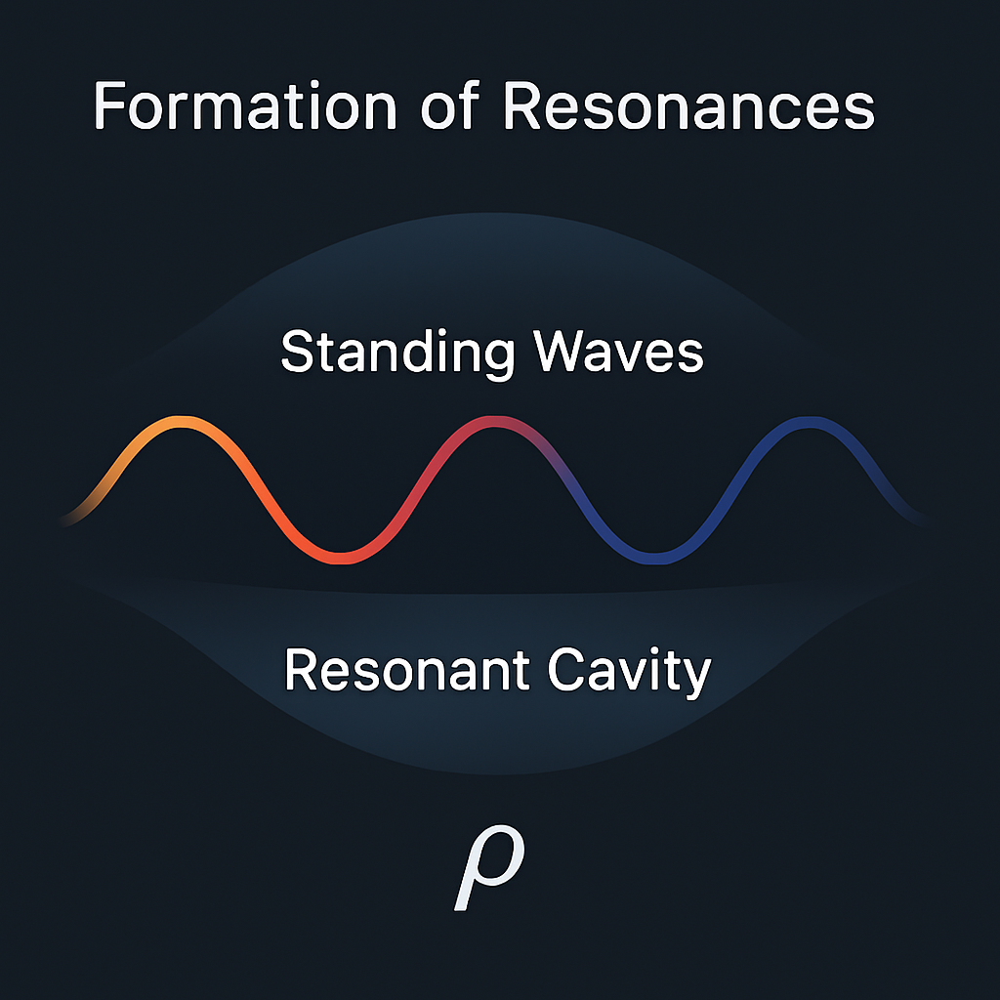
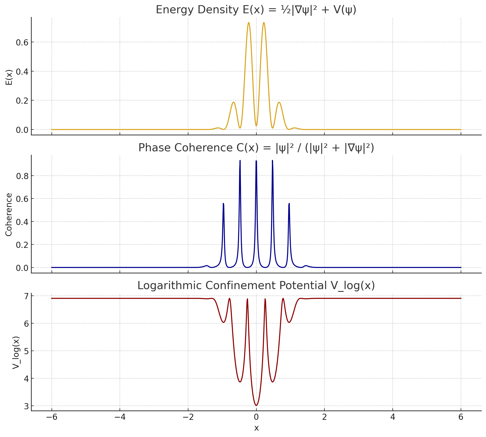

Mathematical structure
Canonical equations, explicit assumptions, status labels, symbolic checks, and formal-support mappings define what the theory actually claims.
Controls Engineer · Independent Researcher · Software Developer
Papers, equations, simulations, experiments, open-data analyses, and computational extensions organized so new readers can find the central idea before entering the full corpus.
The research idea
Wave Confinement Theory is a proposed geometric wave framework in which localized physical structure arises from sustained oscillation, finite-wavenumber selection, phase organization, curvature feedback, and topology.
Energy and phase propagate through a field.
A preferred spectral shell suppresses unrestricted growth.
Boundary and feedback conditions organize persistent modes.
Phase, geometry, and topology stabilize localized structure.
Visual guide
The strongest visuals are used as orientation or technical figures, with their evidentiary role stated explicitly.



Boundary: illustrations explain the intended geometry; numerical and empirical claims are evaluated separately.
This website
Accessible plain-language summaries, research-status labels, and publication discovery.
Browse publicationsMachine-readable corpus
Stable equation IDs connected across canonical equations, SymPy, Lean, semantic graph records, and DOI sources.
Explore the corpusGitHub research hub
Equations, manuscripts, simulations, and the full technical archive of the program.
Opengeometry_of_resonance
Zenodo
Permanent DOI records and downloadable releases for every cited paper.
View archived worksStart here
Core overview · Foundational proposal
The main statement of WCT and its proposed emergence of mass, force, and effective spacetime geometry.
Axiomatic substrate · Foundational proposal
Observable energy density, flux, phase, conservation, finite-wavenumber selection, and shell formation.
Mass-locking proposal · Mathematical derivation
The cleanest formulation of the loop-curvature rest-energy ansatz.
Mathematical stability · Mathematical derivation
The argument that stable curvature-locked confinement is restricted to at most three spatial dimensions.
From theory to technology
WCT begins as a mathematical framework and extends into computational, photonic, memory, security, and control architectures. Implementation status is tracked at the project level so theoretical claims, prototypes, experiments, and engineering milestones remain distinct.
Canonical equations, explicit assumptions, status labels, symbolic checks, and formal-support mappings define what the theory actually claims.
Simulations and diagnostics test finite-band selection, localization, phase organization, persistence, and failure modes.
Research branches explore persistent wave memory, drift detection, resonant references, coherent field generation, and related computational structures.
Reproducible source, experiments, public-data studies, patent filings, and open technical gaps provide separate paths for evaluation.
These areas are being investigated as consequences or engineering extensions of the underlying confinement and coherence ideas.
Engineering evaluation: commercial performance, scaling behavior, production-scale hardware feasibility, and independent replication are tracked as separate validation milestones.
Research branches
01 / Core
The central archive for equations, manuscripts, simulations, reading maps, experiments, and the current dependency structure of the program.
geometry_of_resonance →02 / Experiment
Raw oscilloscope waveform, FFT analysis, prediction ledger, ratio diagnostics, shuffle nulls, and explicit control requirements.
photodiode →03 / Atomic data
A reproducible line-density scan using public NIST Atomic Spectra Database exports, with Python and R implementations.
NIST analysis →04 / Collider data
Log-periodic residual tests, active-domain winding, Koide-like comb geometry, sideband controls, and veto-covariance diagnostics.
LHC analysis →05 / Collider replication
Cross-period frozen-frequency replication culminating in a prospective fixed-frequency, fixed-phase, fixed-sign CMS Run2016G holdout.
CMS analysis →06 / Gravitational-wave data
Training-only frequency selection followed by frozen GWTC holdout tests and a prospective log-frequency prediction for future catalogs.
GWTC analysis →07 / Computation
Experimental path-dependent commitments, one-time signatures, adversarial audits, and a prototype ledger with documented security-analysis targets.
Wavelock →08 / Architecture
Extensions of confinement and coherence concepts into AI architecture, recursive drift analysis, and diagnostics-driven fusion control.
Browse the publication archive →NIST: NIST is the public data provider only. No NIST endorsement, certification, or validation is claimed.
WaveLock: The current constructions are experimental research prototypes; security properties are tracked through documented proof obligations, adversarial tests, and implementation audits.
Latest releases
Recent releases link to DOI records when archived and to their source repositories when archival records are pending.
A progressively constrained CMS sequence from discovery to frozen-frequency replication, cross-period preregistration, and a prospective fixed-frequency, fixed-phase, fixed-sign holdout.
github.com/rickyjreyes/wct-cms
Training-only model selection identifies a stable log-frequency near k ≈ 9.7, followed by frozen holdout tests under two statistical formulations and a preregistered prospective target.
github.com/rickyjreyes/GWTC
A reproducible log-cosine line-density scan over public NIST Atomic Spectra Database exports, with null controls. NIST is the data provider only.
10.5281/zenodo.20435463
The complete, searchable archive holds 24 research releases with research-status labels, category and year filters, DOI links where available, source repositories, and citation exports.
About
Richard J. Reyes is a controls engineer and software developer working in industrial refrigeration and process automation. His engineering work includes PLC logic, instrumentation, alarms, sequencing, networked HMIs, commissioning, and control-system troubleshooting.
He holds a B.S. in Computer Science from San José State University. His independent research spans nonlinear wave dynamics, mathematical physics, scientific computing, experimental signal analysis, public-dataset studies, computational architecture, and resonance-based control.
Contact and review